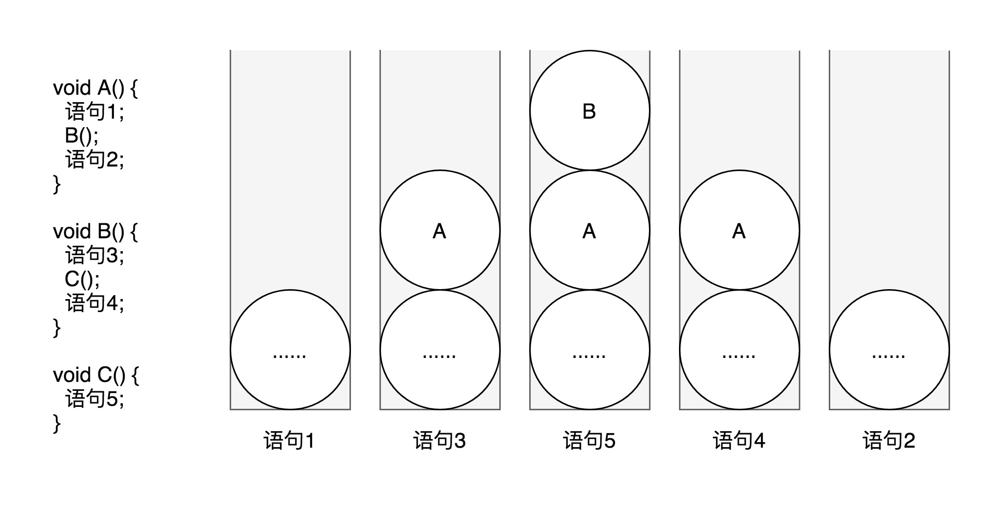
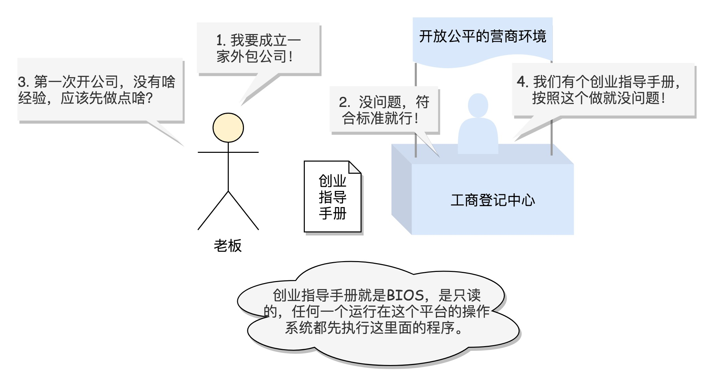
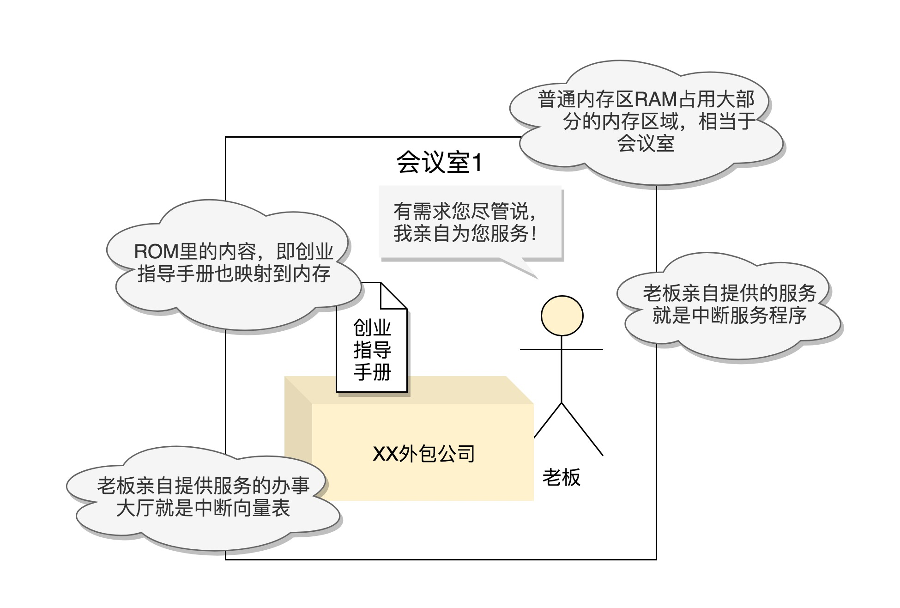
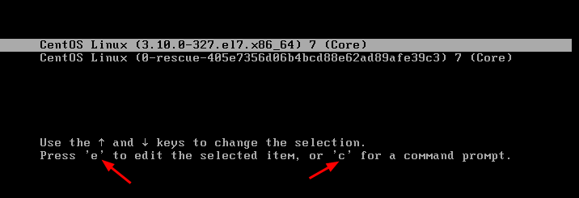
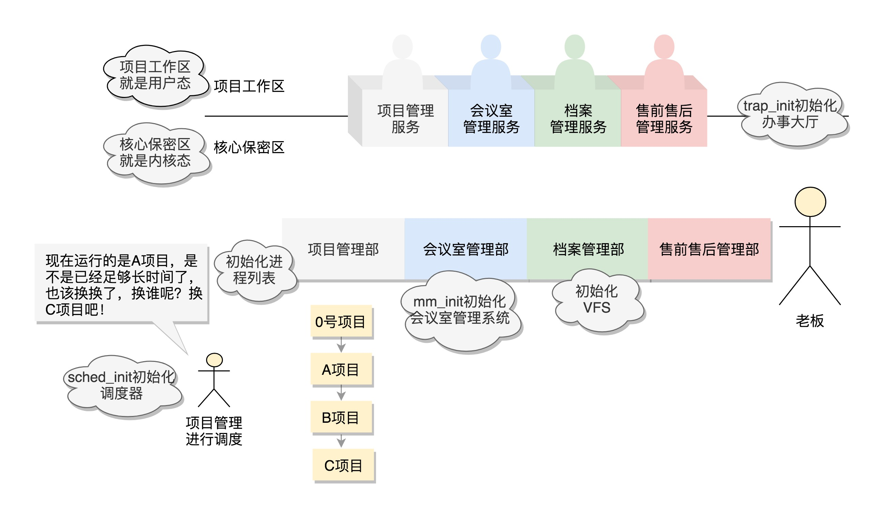
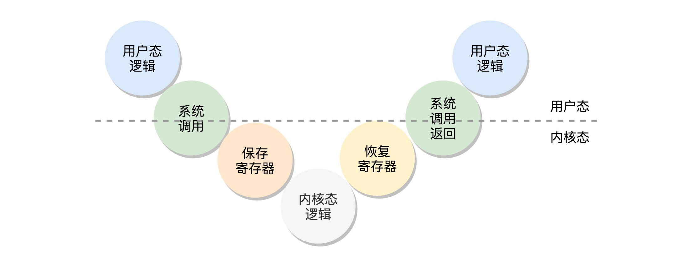
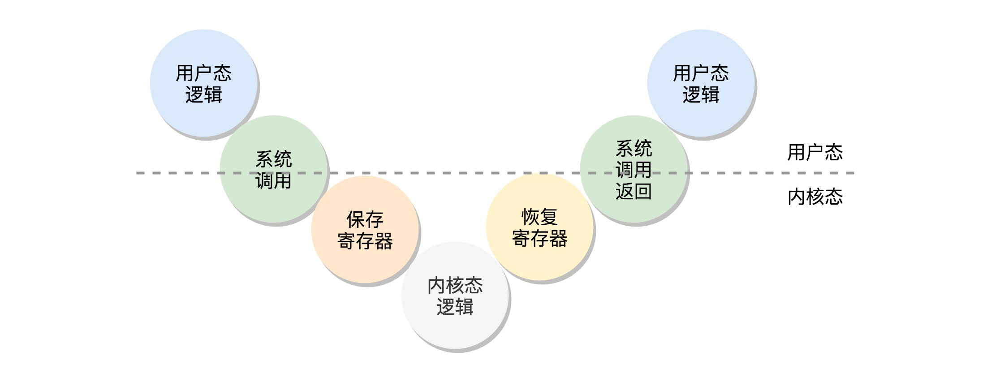
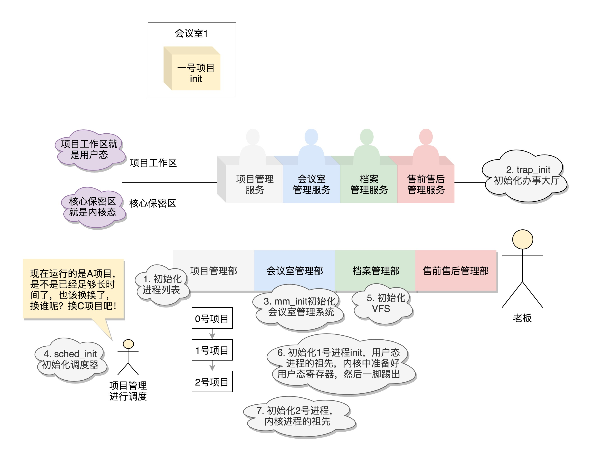

趣谈Linux操作系统6-9：架构、启动、初始化、系统调用
文章目录
06-x86架构：有了开放的架构，才能打造开放的营商环境
- x86是一个统一、开放的架构，保证系统运行的硬件环境单一稳定
计算机的工作模式是什么样的？
- 如下图是计算机的结构

cpu是最核心的计算设备，总线是cpu和其他设备之间的高速通道，内存用于存放中间结果- cpu分为3部分：运算单元、数据单元、控制单元：
运算单元只负责计算。它不知道算哪些数据，也不知道结果放在哪数据单元包括寄存器组和cache，空间很小但很快。用于存放中间结果（寄存器、cache、内存、硬盘、云存储，它们构成存储的层次性）控制单元指导运算单元取出数据单元中的数据，计算出结果并放入数据单元。
- 如下图是cpu和存储设备之间的数据流向

- cpu执行程序的过程：
- 每个进程的程序都是存储于硬盘的
二进制文件，进程将其加载到自己的独立进程空间中形成代码段。 - cpu的控制单元有一个
指令指针寄存器，它里面存放的是下一条指令在内存中的地址，控制单元从代码段中取指令，放入指令寄存器。 - 指令分两部分：一部分指明做什么操作（交给运算单元），另一部分指明操作哪些数据（交给数据单元）
- 数据单元根据数据的地址，从
数据段中读数据到数据寄存器。运算单元进行运算，产生的结果暂存在数据单元的数据寄存器，最终会有指令将其写回内存的数据段
- 每个进程的程序都是存储于硬盘的
进程切换：cpu有两个寄存器，分别保存当前进程代码段和数据段的起始地址。切换到另一个进程时更新这两个寄存器- 总线：
地址总线传输地址，在内存中索引。地址总线宽度决定能寻址的范围数据总线传输数据。数据总线的宽度决定一次能传多少数据
x86成为开放平台历史中的重要一笔
- 硬件架构的标准：开放、统一、兼容
- 如下图是x86的发展历程，x86的开端是8086，故叫x86

从8086的原理说起
- 8086是x86中最经典的处理器，已经很老了，但现代操作系统的很多特性都和它有关，且一直保持兼容
- 如下图是8086的组件

- 数据单元：
- 处理器内部有8个16位
通用寄存器，分别是AX、BX、CX、DX、SP、BP、SI、DI - AX、BX、CX、DX可分成两个8位寄存器，分别是AH、AL、BH、BL、CH、CL、DH、DL
- 处理器内部有8个16位
- 控制单元：
- IP(Instruction Pointer)是
指令指针寄存器，指向代码段中下一条指令的位置（下一条指令在代码段中的偏移量）。CPU会根据它来将指令从内存的代码段中加载到CPU的指令队列中，然后交给运算单元去执行 - CS(Code Segment)是
代码段寄存器，存放代码段的起始地址 - DS(Data Segment)是
数据段寄存器，存放数据段的起始地址 - SS(Stack Register)是
堆栈段寄存器 - ES(Extra Segment)是
附加段寄存器
- IP(Instruction Pointer)是
- 凡是与函数调用相关的操作都和栈紧密相关。
- 如下图是函数调用栈的例子：从左到右是栈随程序执行的变化。A调用B，B调用C。调用B时把A运行的相关信息压入栈中，调用C时把B运行的相关信息压入栈中。C执行完将B弹出继续执行，B执行完将A弹出继续执行 
- 从内存中加载指令和数据：
- 代码段起始地址保存在CS中，代码段偏移量保存在IP中
- 数据段起始地址保存在DS中，数据段偏移量保存在通用寄存器中
- 8086的寄存器是16位，但地址是20位（为增大寻址范围）。为了利用20位地址总线，使用
起始地址*16+偏移量的计算方法（如上图的地址加法器，*16即是左移4位，刚好用到最高位） - 20位地址总线的最大寻址范围：1M
- 16位偏移量的范围（即段的最大值）：64k
再来说32位处理器
- 32位地址总线的最大寻址范围：4G，但必须保证对8086的兼容
- 通用寄存器保持兼容：通用寄存器被扩展到32位，但低16位和低8位的命名与8086保持一致。只是整个32位寄存器的名字在原理6位寄存器的名字前加上E(extend)
- 段寄存器（CS、DS、SS、ES）不完全兼容：若段寄存器和地址线都是32位，则不需要偏移再相加。
- 对段寄存器重新定义：32位机中段寄存器仍是16位，但不再保存段的起始地址。段的起始地址放在内存中，是一个表格（
段表）。表格中的每一项是段描述符，这里才是真正的段起始地址。而段寄存器里面保存的是在这个表格中的哪一项，称为选择子。寻址的过程变为：从段寄存器中取索引，在段表中根据索引取出段的起始地址 - 如下图是32位机的通用寄存器和段寄存器

- 实模式和保护模式：
实模式：兼容16位机，从段寄存器中直接取段起始地址（只能寻址1M，每个段最多64K）保护模式：不兼容16位机，从段寄存器中查找段表索引，再从段表中取段起始地址（可用到32位机完整的寻址能力）- 系统刚启动时，cpu处于实模式。需要更多内存时可切换到保护模式。
- 32位机和16位机不能无缝兼容，但可切换模式来兼容
总结
- 如下图是32位机的整体架构

07-从BIOS到bootloader：创业伊始，有活儿老板自己上
BIOS时期
BIOS是一块ROM，掉电不会丢失。而内存是RAM，掉电会被擦除。- 主板上电时没有操作系统，内存也是空白，从BIOS中读取程序。 
- 刚开机时cpu处于实模式，只能寻址1M
- 如下图是开机处于实模式时的内存分布

- 最上面的0xF0000到0xFFFFF这64K映射给ROM
- 电脑刚上电时会做一些重置工作，将CS设置为0xFFFF，将IP设置为0x0000，所以第一条指令指向0xFFFF0，在ROM中。这里有一条
JMP命令跳到ROM中初始化的代码，即让BIOS控制初始化。 - BIOS控制初始化：
- 第一阶段检查各硬件是否正常工作
- 第二阶段建立
中断向量表和中断服务程序（为鼠标和键盘控制服务），并向屏幕打印信息
- 如下图是BIOS初始化阶段提供的服务 
bootloader时期
- BIOS完成初始化后，需要寻找操作系统
- 操作系统一般放在硬盘（启动盘）上，
启动盘一般在第一个扇区，占512字节，而且以0xAA55结束。满足这个条件时说明是一个启动盘，在512字节以内会启动相关的代码 - Linux中由
grub2(Grand Unified Bootloader Version 2)管理启动，可通过grub2-mkconfig -o /boot/grub2/grub.cfg来配置启动选项，里面的代码类似于下面：
|
|
- 上面的代码对应下图，即在系统启动时成为一个列表，让用户选择从哪个系统启动。 
- 使用
grub2-install /dev/sda，可以将启动程序安装到相应的位置 - grub2首先安装的是
boot.img。它由boot.S编译而成，一共512字节，安装到启动盘的第一个扇区。该扇区通常称为MBR（Master Boot Record，主引导记录/扇区）。 - BIOS完成任务后，会将boot.img从硬盘加载到内存中的
0x7c00来运行 - boot.img做不了太多的事（512字节空间有限），它的最重要的事是加载grub2的另一个镜像
core.img，它由lzma_decompress.img、diskboot.img、kernel.img和一系列的模块组成，功能比较丰富，能做很多事情。 - 如下图是硬盘空间的分布

- boot.img先加载core.img的第一个扇区。如果从硬盘启动，该扇区里面是diskboot.img，对应代码是diskboot.S
- diskboot.img得到控制权后，将core.img的其他部分加载进来。首先解压lzma_decompress.img，然后kernel.img（它不是Linux的内核，而是grub的内核），最后各个模块module对应的映像
- lzma_decompress.img对应的代码是startup_raw.S，它调用
real_to_prot切换到保护模式（随着加载的内容变多，实模式的寻址空间不够用），然后解压缩kernel.img
从实模式切换到保护模式
- 切换到保护模式要干很多工作，大部分工作都与内存的访问方式有关。
- 启用
分段：在内存里建立段表，将段寄存器变成段选择子，指向段表中的段描述符。 - 启动
分页：将内存分为等大小的块
- 启用
- 切换到保护模式的函数
DATA32 call real_to_prot会打开Gate A20，即第21根地址线的控制线 - 对
kernel.img解压缩并运行。它对应的代码是startup.S以及一堆c文件。在startup.S中调用grub_main，这是grub kernel的主函数。 - 在grub_main中，
grub_load_config()开始解析grub.conf文件里的配置信息。 - 若正常启动，则grub_main最后会调用
grub_command_execute (“normal”, 0, 0)，最终会调用grub_normal_execute()函数。在该函数中，grub_show_menu()会显示出可供选择的操作系统列表。 - 选择操作系统后，调用
grub_menu_execute_entry()解析并执行选择的系统 - 例如上面代码中的linux16命令表示装载指定的内核文件，并传递内核启动参数。于是
grub_cmd_linux()函数会被调用，它首先读取Linux内核镜像头部的一些数据结构，放到内存中进行检查。若检查通过，则读取整个Linux内核镜像到内存。 - 若配置文件中还有
initrd命令，用于为即将启动的内核传递init ramdisk路径。于是grub_cmd_initrd()函数会被调用，将initramfs加载到内存中来 - 上面都做完之后，
grub_command_execute (“boot”, 0, 0)才开始真正地启动内核
总结
- 如下图是从BIOS到启动linux内核之间的工作

08-内核初始化：生意做大了就得成立公司
- 内核的启动入口函数是
start_kernel()。在init/main.c文件中，start_kernel相当于内核的main函数。打开这个函数，里面是各种初始化函数XXXX_init。 - 下图是start_kernel()中的各种初始化

初始化公司职能部门
INIT_TASK(init_task)：初始化进程0号进程：是系统创建的第一个进程，唯一一个没有通过fork或者kernel_thread产生的进程，也是进程列表的第一个。有一行指令set_task_stack_end_magic(&init_task)。其中参数init_task即是零号进程，其定义是struct task_struct init_task=INIT_TASK(init_task)
trap_init()：初始化中断- 初始化中断时设置
中断门用于处理中断。其中set_system_intr_gate(IA32_SYSCALL_VECTOR, entry_INT80_32)是系统调用的中断门。 系统调用也是通过发送中断的方式实现，但64位有另外的系统调用方法
- 初始化中断时设置
mm_init()：初始化内存管理模块sched_init()：初始化调度模块vfs_caches_init()：初始化基于内存的文件系统rootfs。该函数中调用mnt_init()->init_rootfs()，有一行register_filesystem(&rootfs_fs_type)，在VFS虚拟文件系统里注册一种类型，定义为struct file_system_type rootfs_fs_typeVFS（Virtual File System，虚拟文件系统）：为了兼容各种文件系统，需要将文件的相关数据结构和操作抽象出来，形成一个抽象层对上提供统一接口，这个抽象层就是VFS
rest_init()：其他方面的初始化- 如下图是初始化的各项工作： 
初始化1号进程
rest_init()的第一个工作是，用kernel_thread(kernel_init, NULL, CLONE_FS)创建第二个进程，这个是1号进程- 1号进程对操作系统意义很大。因为它将运行一个用户进程，此时要区分内核态和用户态。（1号进程是所有用户态进程的祖先）
- x86提供了分层的权限机制，把区域分成四个
Ring，越往里权限越高。 - 如下图是x86的分层权限机制

- 操作系统把能访问关键资源的代码放在
Ring0，称为内核态。普通程序代码放在Ring3，称为用户态 - 在保护模式下，用户态代码不可执行更高权限的指令。它们只能通过系统调用来调用内核态的代码来访问核心资源，访问结束后返回用户态代码继续执行。
- 用户态代码进行系统调用（切换到内核态）时，要把当时CPU寄存器的值全部暂存到内存中。系统调用结束后返回时，从内存中将寄存器的值恢复到cpu（切换到用户态）
- 如下两图是用户态切换到内核态的过程
 

从内核态到用户态
- 执行kernel_thread函数创建1号进程时，还在内核态
- 建立1号进程时，
kernel_thread的参数是一个函数kernel_init，即该进程会执行这个函数。在kernel_init中又调用kernel_init_freeable() - kernel_init_freeable()中有代码：
|
|
- kernel_init()中有代码：
|
|
- run_init_process()的定义：
|
|
- 以上三段代码说明1号进程运行的是一个文件：
- 在
kernel_init函数中调用run_init_process/try_to_run_init_process - 在
run_init_process函数中调用do_execve - do_execve是系统调用
execve的实现，作用是运行一个可执行文件 - 运行的文件是
ramdisk的/init，或者普通文件系统上的/sbin/init或/etc/init或/bin/init或/bin/sh - 不同linux选择不同文件，只要有一个能运行即可
- 在
- 调用链：do_execve->do_execveat_common->exec_binprm->search_binary_handler
- 调用链中search_binary_handler的定义：
|
|
- 以上代码说明，要运行程序需要加载其二进制文件。
- linux下常用的可执行文件格式是
ELF(Executable and Linkable Format) elf_format的定义：
|
|
- 执行文件时先调用load_elf_binary，最后调用
start_thread - start_thread的定义：
|
|
- 上面代码中的struct
pt_regs是保存寄存器的结构体 - 该函数将寄存器中的CS设置为__USER_CS，DS设置为__USER_DS，IP和SP也设置为新的值。即将寄存器设置为用户态（内核中准备好的状态）
force_iret()用于从系统调用中返回，此时执行将pt_regs加载到寄存器的工作。因此后面的指令以用户态运行
ramdisk的作用
- 之前的grub.cfg中有一行：initrd16 /boot/initramfs-3.10.0-862.el7.x86_64.img，这是一个
基于内存的文件系统 - 1号进程运行的init程序在文件系统上，文件系统在硬盘上，硬盘需要驱动。驱动繁多，不可能都放进内核。但内存不需要驱动，因此需要先使用基于内存的文件系统来存放init程序，这个时候ramdisk是根文件系统
- 1号进程运行完ramdisk上的/init程序后就处于用户态了。该程序先根据存储系统的类型加载驱动，有了驱动就可设置真正的根文件系统。有了真正的根文件系统，ramdisk上的/init会启动文件系统上的init。然后各种系统的初始化。启动系统的服务，启动控制台，用户就可以登录了。
创建2号进程
1号进程是所有用户态进程的祖先，2号进程是所有内核态进程的祖先- 从内核态来看，无论是
进程，还是线程，我们都可以统称为任务，都使用相同的数据结构，平放在同一个链表中 - 2号进程使用kernel_thread(kthreadd, NULL, CLONE_FS | CLONE_FILES)创建
kthreadd函数负责所有内核态的线程的调度和管理
总结
- 如下图是初始化的总结 
09-系统调用：公司成立好了就要开始接项目
- 以glibc中打开文件的open为例来解释系统调用的过程
glibc对系统调用的封装
- glibc中open函数的声明：
|
|
- glibc有一个文件
syscalls.list，其中存放glibc的函数对应的系统调用，例如
|
|
- glibc还有一个脚本
make-syscall.sh，可根据上述配置文件，对于每一个封装好的系统调用生成一个文件，该文件中定义了C语言的宏，例如#define SYSCALL_NAME open - glibc还有一个文件
syscall-template.S，它使用上面定义的宏来定义这个系统调用的调用方式，例如：
|
|
- 上面代码中的
PSEUDO也是宏，定义为：
|
|
- 其中对于任一个系统调用都会调用
DO_CALL，它也是一个宏，且32位和64位定义不一样
32位系统调用过程
- 32位的
DO_CALL定义于i386目录下的sysdep.h文件：
|
|
- 如上面注释所说，根据系统调用名称
syscall_name得到系统调用号，放在寄存器eax中，各参数也放于寄存器中。然后执行ENTER_KERNEL ENTER_KERNEL的定义是# define ENTER_KERNEL int $0x80，即触发一个软中断，通过它来陷入（trap）内核- 内核启动时有运行
trap_init()初始化中断，其中代码set_system_intr_gate(IA32_SYSCALL_VECTOR, entry_INT80_32);是一个软中断的陷入门。当接收到系统调用时，entry_INT80_32被调用，在entry_32.S中定义如下：
|
|
- 上面的代码通过
push和SAVE_ALL将当前用户态的寄存器保存在pt_regs结构里面，然后调用do_syscall_32_irqs_on，其实现如下：
|
|
- 上面代码将系统调用号从eax（即是orig_ax）中取出，然后在系统调用表
ia32_sys_call_table中查找相应函数进行调用。这里的eax和调用的各项参数与前面sysdep.h中（即DO_CALL定义处）的注释一致。 - 实际上ia32_sys_call_table的定义是#define ia32_sys_call_table sys_call_table，即
sys_call_table才是真正的调用表 - 根据定义#define INTERRUPT_RETURN iret可知，在entry_32.S中，entry_INT80_32之后紧接着调用iret。
iret指令将原来用户态保存的现场恢复回来，包括代码段、指令指针寄存器等。这时候用户态进程恢复执行。 - 如下图是32位系统调用的过程

64位系统调用过程
- 64位的
DO_CALL定义于x86_64目录下的sysdep.h文件：
|
|
- 将系统调用名称syscall_name转为调用号放到寄存器rax，但这里用的是真正的调用（
syscall指令）而不是中断。另外传递参数的寄存器也不一样了 - syscall指令使用了一种特殊的寄存器，
特殊模块寄存器（Model Specific Registers，MSR），它们帮助CPU完成某些特殊控制功能（例如系统调用） - 系统初始化时，
trap_init除了初始化上一节的中断模式外，在这里还会调用cpu_init->syscall_init，其中有代码：
|
|
rdmsr和wrmsr用来读写特殊模块寄存器MSR_LSTAR是一种特殊模块寄存器，当syscal指令调用时，会从这个寄存器里取出函数地址来调用。这里是调用entry_SYSCALL_64- entry_SYSCALL_64定义于arch/x86/entry/entry_64.S：
|
|
- 上面的代码向pt_regs结构保存了很多寄存器，如用户态的代码段、数据段、保存参数的寄存器，然后调用entry_SYSCALL64_slow_path，在其中再调用do_syscall_64
do_syscall_64的定义如下：
|
|
- 如上面代码，在do_syscall_64中，先从rax里面拿出系统调用号，然后根据系统调用号，在系统调用表
sys_call_table中找到相应的函数进行调用，并将寄存器中保存的参数取出来，作为函数参数。参数对应的寄存器和sysdep.h文件中的注释一样 - 在entry_64.S中，64位系统调用返回时，执行
USERGS_SYSRET64，它定义为：#define USERGS_SYSRET64 swapgs; sysretq;，因此返回用户态的指令是sysretq - 如下图是64位系统调用的过程

系统调用表
- 32位和64位都会使用系统调用表
sys_call_table - 32位系统调用表定义于arch/x86/entry/syscalls/syscall_32.tbl，例如
|
|
- 64位系统调用表定义于arch/x86/entry/syscalls/syscall_64.tbl，例如
|
|
- 以上两个文件中，第一列数字是系统调用号（同一个调用的32位和64位不同），第三列是系统调用的名字，第四列是系统调用在内核的实现函数，它们都以sys开头
- 系统调用在内核中的实现经常声明在include/linux/syscalls.h文件中，例如：
|
|
- 系统调用真正的实现一般在c文件中，例如sys_open实现于fs/open.c中：
|
|
- 以上代码看起来很奇怪，主要是SYSCALL_DEFINE3这个宏系统调用，它定义于：
|
|
- 在以上代码中，宏系统调用
SYSCALL_DEFINEx最多6个参数，x是参数数量。sys_open定义使用SYSCALL_DEFINE3是因为它有3个参数 - 若在上面的代码中代入参数x=3，将该宏的实现展开并代入sys_open的实现，得到等价的C语言定义：
|
|
- 编译sys_open时，需根据
syscall_32.tbl和syscall_64.tbl生成自己的unistd_32.h和unistd_64.h。生成方式在arch/x86/entry/syscalls/Makefile - 编译时会使用两个脚本：
- arch/x86/entry/syscalls/syscallhdr.sh，会在文件中生成
#define __NR_open - arch/x86/entry/syscalls/syscalltbl.sh，会在文件中生成
__SYSCALL(__NR_open, sys_open) - 这样，unistd_32.h和unistd_64.h是sys_open对应的系统调用号和系统调用实现函数之间的对应关系
- arch/x86/entry/syscalls/syscallhdr.sh，会在文件中生成
- 在文件arch/x86/entry/syscall_32.c中定义了这样一个表，它include了这些系统调用的头文件，因此所有sys_系统调用都在这个表中：
|
|
- 在文件arch/x86/entry/syscall_64.c中定义了这样一个表，它include了这些系统调用的头文件，因此所有sys_系统调用都在这个表中：
|
|
总结
- 如下图是系统调用的总结